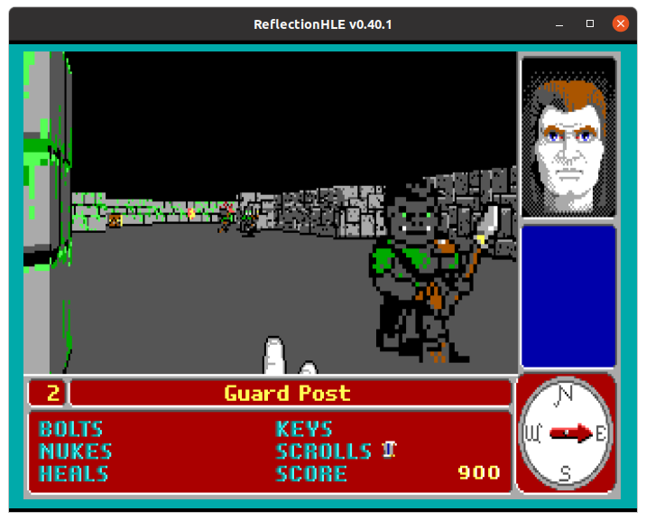
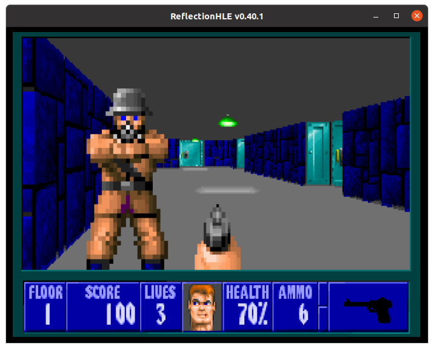
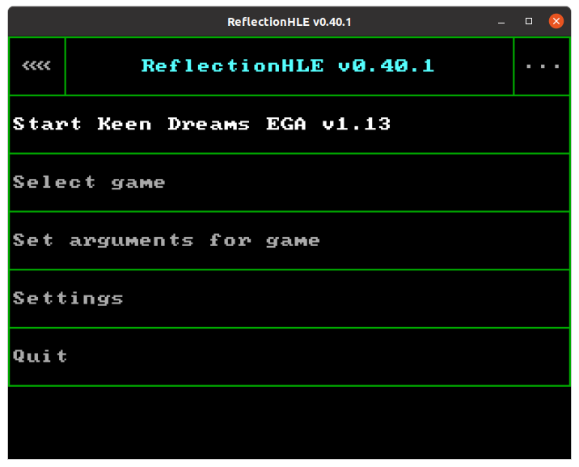

ReflectionHLE
- About ReflectionHLE
- Supported games
- Features
- Screenshots
About ReflectionHLE
ReflectionHLE is a project consisting of source ports of video games from the 1990s. This project is inspired by Chocolate Doom, thus the emphasis is on reproducing the experience of playing original DOS versions of the games as they were released.
Supported games
- Keen Dreams.
- Catacomb 3-D and the Catacomb Adventure Series.
- Wolfenstein 3D, Spear of Destiny and Super 3-D Noah’s Ark (DOS versions).
Features
- Play the games as when they were released for DOS, with adaptations for running them on modern platforms.
- For a subset of the games, multiple versions from the 1990s are supported, including behaviors unique to them.
- Support the usage of modern input devices.
- High level emulation of hardware components, as much as should be expected.
- Internal emulation of volume controls, including stereo panning for Wolfenstein 3D.
- Overscan border emulation.
- Text mode emulation.
- Cross-platform support.
Screenshots




